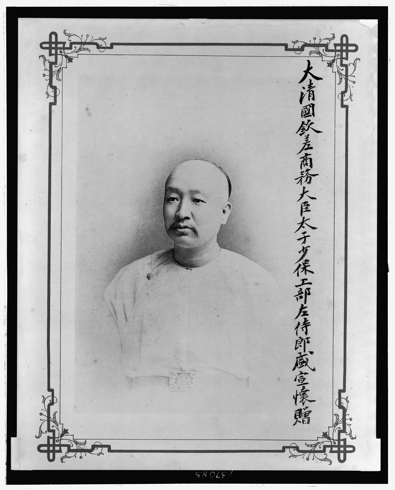

第 3 章
北京：邮传部的算盘
邮传部尚书盛宣怀的签押房里，最先落进视线的是那盏灯。灯罩是素白纱绢，灯油添得满，火苗稳得几乎没有颤动。灯光铺在大案上，把案面照出一片暖黄色的矩形。矩形中央搁着一份奏折草稿，墨迹已干

邮传部尚书盛宣怀肖像
图源：维基共享资源 · Miscellaneous Items in High Demand, PPOC, Library of Congress · Public domain
，纸面上贴着七八张红签条——那是幕僚们批注的修改意见。草稿右侧压着一册装订齐整的清折，封面题签写着“川汉、粤汉铁路历年筹款工程汇总清册”。左侧是一份洋式装订的合同草案，封面无字，只以火漆封角，火漆上压着邮传部的关防。
盛宣怀不在案前。他站在签押房西墙下，面对一幅挂屏。挂屏上裱着光绪二十九年的一份上谕抄件，内容是准各省商办铁路。
宣统三年四月的夜风从窗缝里挤进来，吹得灯苗晃了一下。挂屏玻璃上反射出他自己的脸——六十七岁，须发皆白，眼窝深陷，嘴唇紧抿成一条线。那张脸叠在“商办”二字上面，像是某种刻意的对照。他转过身，走回大案前，拉开椅子坐下。椅子是洋式的，带扶手和软垫，与签押房里其余那些硬木家具格格不入。
这是他督办铁路总公司时期养成的习惯——坐洋椅子，看洋账本，谈洋借款。幕僚们知道他的脾气，从不在签押房里摆那些酸枝木的太师椅。
盛宣怀伸手把那份清折拉到面前，翻开第一页。这是邮传部路政司会同度支部制用科合编的汇总清册，编成于宣统三年三月。清册的体例很规整：每一页分上下两栏，上栏记筹款，下栏记工程。翻开来，左手页是川汉，右手页是粤汉。两相对照，数字自己会说话。
川汉铁路公司自光绪三十年开办至宣统二年年底，筹款总额列在页首：一千一百九十八万三千余两。这个数字下面，是分项明细。租股一项独占大头，计九百二十八万七千余两，占总数的七成七。官股——也就是由四川藩库拨给的官款——计六十七万四千余两。商股，即由盐商、茶商、票号认购的股份，计一百零二万一千余两。另有铜元局余利拨充三十八万两，土药税附加拨充六十二万两。
盛宣怀的目光在“租股”那一栏上停住。九百二十八万七千余两。这个数字意味着什么，他比任何人都清楚。
光绪三十一年川督锡良奏定《川汉铁路按租抽股章程》，规定凡川省田产，每亩每年抽收铁路捐三至五文不等，由各州县粮房随田赋正额一并征收，上缴铁路公司。三至五文，按当时银钱比价折算，约合银三至五厘。一亩三至五厘，四川全省耕地面积约四千六百万亩，每年租股收入约在一百五十万两上下。七年累积，九百余万。
这不是股份，这是变相的田赋附加。盛宣怀在心里给了一个判断。他做了三十年的洋务，办了轮船招商局、电报局、汉阳铁厂，经手的股本数以千万计，从来没有见过这样筹集商股的。真正的商股是自愿认购，盈亏自负。租股却是按亩摊派，不管农户愿不愿意，也不管农户知不知道铁路为何物，钱已经从粮柜上扣走了。
他把清折翻到下一页。工程进度栏里的数字，与筹款栏形成了刺目的反差。截至宣统二年年底，川汉铁路实际铺轨通车里程为零。宜昌至秭归段开工一年有余，仅完成路基土方约三十里，开凿隧道三座均未贯通，铺设钢轨更无从谈起。清折里附了一行小注：“宜昌至归州，计程一百二十里，沿途山岭重叠，桥隧相属，工程艰巨，需款浩繁。”小注下面又有一行更小的字：“已耗工款三百余万两。”
一千一百九十八万两的筹款，三百余万两的工款消耗，零里的通车里程。盛宣怀合上清折，把它推到一边。这个动作很轻，像是怕惊动什么。
然后他把那份洋式合同草案拉到面前，解开火漆封角，翻开第一页。合同以英文为正本，法文为副本，中文译本附后。首页正中印着四国银行团的联署：汇丰银行代表英国、德华银行代表德国、东方汇理银行代表法国、摩根公司代表美国。借款总额印在第二页第一行：六百万英镑。六百万英镑，按当时汇率折合库平银约四千八百万两。这个数字恰好可以覆盖粤汉、川汉两条干线的全部工程预算，还能偿还两路此前积欠的料款和息款。
盛宣怀翻到还款条款那一页。借款期限四十年，年息五厘，以两湖厘金、盐税作抵，铁路建成后以运营收益为还款来源。合同还规定，修筑期间由银行团指派总工程师，工程材料优先向四国采购。他把合同草案摊开，又把清折拉回来，并排放在大案上。两本账，一左一右，中间只隔着几寸的距离。
左边的清折是过去七年商办铁路的结算单：一千二百万两白银筹进来，零里铁路修出去，三百余万两工款花出去，账目亏蚀数百万两。右边的合同是未来四十年国家信用的抵押单：六百万英镑借进来，两条干线修出去，两湖厘金盐税押上去，铁路收益还回去。这两本账之间的逻辑关系，在盛宣怀看来是清楚的。商办失败，所以必须国有。国有缺款，所以必须借款。借款需要担保，所以必须抵押厘金盐税。这个逻辑链条环环相扣，每一环都有数字支撑。他把这个逻辑写进了奏折草稿，幕僚们贴的红签条大多是润色词句，没有一条质疑论证本身。
但有一张红签条的位置很特别。它贴在奏折草稿的第三段，也就是论述“商办之弊”那一节。签条上的字迹很工整，是邮传部左侍郎沈云沛的手笔：“租股一款，按亩摊派，实与加赋无异。商办之名，官收其实。今若收路而不议股款处置办法，恐川民以‘既夺其路、又没其款’为口实，激成事变。”
盛宣怀把这张签条揭下来，搁在灯下。沈云沛是邮传部的老人，光绪三十三年就进了路政司，对各省商办铁路的底细摸得比谁都清楚。他提的这个醒，盛宣怀不是没想过。
收路是一回事，收路之后如何处置股款是另一回事。川汉铁路那一千二百万两股本里，有九百多万两是从四川农户手里按亩收上来的。这些农户手里捏着各县粮房开具的收据，收据上盖着铁路公司的关防，白纸黑字写着“铁路股票”四个字。他们不懂铁路，但他们懂田赋。田赋交给朝廷是天经地义，田赋附加交给铁路公司——那铁路公司就得给他们一个交代。可盛宣怀的奏折草稿里，关于股款处置只有一句：“应由邮传部会同度支部、川督详查账目，分别官股、商股、租股三项，妥拟办法，另行具奏。”
“另行具奏”四个字，沈云沛在上面画了一个圈，圈旁边打了一个问号。盛宣怀拿起笔，在签条下面写了一句批语：“股款处置非本部所能独断，须与度支部会商。且川公司账目未清，施典章案尚未结，此时若遽定办法，恐授人以柄。”写完，他把签条重新贴回奏折草稿上，位置比原来偏了一点，恰好盖住了“另行具奏”四个字。
施典章案。这个名字从脑子里跳出来的时候，盛宣怀下意识地皱了皱眉。施典章是川汉铁路公司驻上海分局的总办，负责管理公司在沪存放的股款。宣统二年，上海橡胶股票投机风潮爆发，牵连多家钱庄倒闭。事后清查发现，施典章将公司存款二百余万两投入上海钱庄生息，其中相当一部分收不回来。
更严重的是，施典章本人涉嫌挪用公司款项参与投机，亏空数额说法不一，有说三十万两，有说五十万两。川汉铁路公司驻沪股款总额约三百五十万两，施典章案发后，实际可收回的不足一百万两。这个案子在宣统三年初已经闹到了北京。
都察院接了四川籍京官的联名弹章，要求彻查施典章并追究川汉铁路公司总理乔树枏的责任。案子正在邮传部、度支部和法部之间会审。盛宣怀心里清楚，施典章案是商办铁路的一面照妖镜：它照出了商办体制下资金监管的真空——公司设在成都，存款放在上海，总办由川督委派，账目却无人能查。四川总督管不着上海的钱庄，上海道台管不着四川的铁路，邮传部想管又隔着一层“商办”的皮。这面照妖镜，盛宣怀打算把它擦亮，搁在皇族内阁的会议桌上。
他伸手按了一下案角的唤人铃。铃声响过，签押房的门被推开，进来的是邮传部郎中、路政司帮办梁士诒。梁士诒三十八岁，广东人，光绪二十九年进士，在邮传部以精于洋务和账目著称。他手里捧着一叠公文，最上面一份是度支部的来文。“度支部催问借款合同的会签稿，”梁士诒把公文放在大案上，“载泽尚书的意思，合同条款里关于抵押品一项，须与度支部会衔具奏，邮传部不能单独画押。”
盛宣怀接过公文，翻到度支部批注那一页。度支部尚书载泽是皇族内阁里少数几个对借款合同条款逐字推敲的人。他在合同草案的抵押条款旁用朱笔批了一行字：“两湖厘金盐税系国家正供，以之抵借外债，须奏明立案，不得以部行文了事。”下面还有一行小字：“且厘金一项，近年收数递减，能否足敷抵偿，应由度支部制用科核算明确后再行会签。”
“载泽尚书批得对，”盛宣怀把公文放下，“厘金收数递减，这是实情。但正因如此，才更要赶紧把铁路修起来。铁路一通，货物流通，厘金自然增加。以铁路收益还铁路借款，这本是各国通例。”
梁士诒没有接这个话头。他在邮传部做了五年，深知盛宣怀和载泽之间的微妙关系。盛宣怀是汉臣，载泽是皇族。盛宣怀管邮传部，载泽管度支部。借款合同是邮传部主谈的，但抵押品——厘金和盐税——是度支部的命根子。载泽不愿意轻易放手，这不只是部门利益的博弈，也是财政控制权的争夺。光绪三十二年实行官制改革以后，度支部收回了各省的财政权，厘金、盐税、关税三大进项都由度支部统一调度。邮传部要拿两湖厘金盐税去抵押借款，等于从度支部碗里扒走一块肉，载泽不点头，合同就签不了。
“载泽尚书那边，我明日去面谈。”盛宣怀说着，把话题拉回到案头的奏折草稿上，“这份收路折子，你拿去看看。沈云沛贴了几张签条，其中关于股款处置那一条，你斟酌一下措辞，明日一早给我改稿。”
梁士诒接过奏折草稿，翻到沈云沛贴签条那一页，看了一遍，又翻回去看了川汉铁路筹款清折里的租股数字。看完，他抬起头来，说了一句盛宣怀没有料到的话。“大人，租股一项，九百余万两，涉及川省数百万农户。这些农户手里的股票收据，虽说不值钱——川汉铁路公司从未发过一分股息——但那是他们缴了七年田赋附加的凭证。收路容易，收股难。若是朝廷不认这笔账，或者认了却不还，川省的事恐怕不好办。”
盛宣怀沉默了一会儿。签押房里只听见灯花偶尔爆裂的细响。“股款不是不还，”他终于开口，语气比刚才慢了许多，“但怎么还、还多少、以什么形式还，这些都要等账目查清之后才能定。川汉铁路公司的账，你比我清楚——铜元局余利那三十八万两，究竟是官款还是商股？土药税附加那六十二万两，是四川省库垫付的还是铁路公司自收的？施典章亏空那几十万两，是公司承担还是股东承担？这些问题不厘清，朝廷怎么还？”
梁士诒没有反驳。他知道盛宣怀说的是事实。川汉铁路公司的账目，确实是一笔糊涂账。但糊涂账也是账。账目糊涂，不等于股权不存在。四川农户缴了七年的租股，不管公司怎么挪用、怎么亏空，那九百多万两白银的原始债权是跑不掉的。朝廷可以查账，可以追究责任，可以调整偿还比例——但不能假装这笔账不存在。这话梁士诒没有说出口。他只是把奏折草稿夹在腋下，欠了欠身，退出了签押房。盛宣怀一个人坐在灯下，把清折和合同草案又翻了一遍。然后他从抽屉里取出一张白纸，提起笔，在纸上写了两行字。第一行是：“六百万英镑，折银四千八百万两，年息五厘，四十年还清，本息合计约一千万英镑。”
第二行是：“川汉公司租股九百二十八万七千余两，按户摊派，涉及川省约七百万农户。”
两行字之间，他画了一条横线。横线上方，是国家信用。横线下方，是农户产权。两者之间，没有任何换算关系。
盛宣怀把这张纸折起来，夹进合同草案的封面里。然后他站起身，走到西墙下，又看了一眼那幅挂屏。光绪二十九年准商办铁路的上谕，在灯下泛着陈旧的黄色。
宣统三年四月的这个夜晚，邮传部尚书的签押房里，两本账都摊开了。一本是过去，一本是未来。中间那条横线，他还没有找到跨越的办法。
第二天一早，梁士诒把修改后的奏折草稿送到了签押房。沈云沛关于股款处置的那张签条被保留了下来，但措辞做了调整。“另行具奏”四个字被删去，换成了一句更具体的表述：“拟请旨饬下四川总督，会同邮传部、度支部，先将川汉铁路公司历年收支账目彻底清查，分别官股、商股、租股三项，核明实存数目，奏明后再行妥议归还办法。”
盛宣怀看了改稿，点了点头。这句话的关键在于“彻底清查”和“核明实存数目”。清查需要时间，核明需要时间。在清查和核明的过程里，朝廷可以做的事情很多——比如先把路权收回来，把借款合同签下来，把工程开起来。至于股款怎么还、什么时候还、以什么形式还，那是下一步的事。这个时间差，是盛宣怀算盘上的一颗珠子。他拨得很轻，但拨得很准。
四月六日，邮传部将奏折正式呈递。折子的抬头是“奏为铁路干线关系大局，拟请收归国有，以速交通而固边防，恭折仰祈圣鉴事”。正文分四段：第一段论铁路干线对于国家统一和国防的极端重要性；第二段论商办铁路七年以来的积弊，以川汉、粤汉两路筹款与工程进度的悬殊数据为论据；第三段论各国铁路国有化的通例，以德、日两国为例；第四段提出收路办法——干路均归国有，支路仍准商办，已集股款由朝廷清查后妥为处置。
折子递上去的当天，盛宣怀去了度支部。度支部衙门在东城，与邮传部隔着半个北京城。盛宣怀的轿子穿过东华门大街时，街面上正热闹着。
报童举着《顺天时报》在叫卖，头版头条是“邮传部奏请铁路干线收归国有”。盛宣怀撩开轿帘看了一眼，报童手里的报纸被风吹得哗哗响，露出第二版的标题：“四国银行团借款合同草约已定”。他放下轿帘，靠在椅背上，闭上了眼睛。度支部尚书载泽在签押房里等着他。载泽比盛宣怀小十二岁，五十五岁，是皇族内阁里最年轻的尚书。他的签押房比盛宣怀那间更讲究——紫檀木大案，螺钿屏风，墙上挂的不是上谕抄件，是一幅郑板桥的墨竹。但案头上堆的东西是一样的：公文、清折、合同草案。“盛大人，”载泽开门见山，“借款合同抵押条款，本部尚有几点疑虑，须当面商榷。”
他说的“几点疑虑”，事实上是三点。第一，两湖厘金近年收数递减，宣统二年实收仅及光绪三十年的一半，以之抵借六百万英镑巨款，能否足敷偿还，度支部没有把握。第二，合同规定以铁路建成后之收益为还款来源，但铁路何时建成、建成后收益几何，都是未知数。如果铁路迟迟不能完工，或者完工后运营亏损，还款责任仍落在厘金盐税上——这等于是度支部替邮传部背了一个无限期担保。第三，合同规定修筑期间由银行团指派总工程师，工程材料优先向四国采购，这等于把铁路的建筑权和管理权拱手让给了外国人。
载泽说这三点的时候，语气很平和，像是在讨论一个技术问题。但盛宣怀听得出来，载泽真正担心的不是技术问题，是政治问题。四国银行团借款，抵押的是两湖厘金盐税——这是朝廷的钱。铁路修成之后，管理权在外国人手里——这是朝廷的路。朝廷拿了朝廷的钱，抵押给外国人，去修一条外国人管理的路。这笔账在载泽看来，怎么算都不划算。盛宣怀没有直接反驳。他从袖子里抽出一份文件，摊在载泽面前。
那是邮传部路政司编制的一份《各国铁路借款合同比较表》，列举了俄国、日本、印度、埃及等国修筑铁路时举借外债的条件和抵押方式。表中的数字显示，五厘年息在当时国际铁路借款市场上属于中等偏低水平，以厘金盐税作抵也是各国通行的做法，并非中国独创。“载大人所虑三点，皆是实情，”盛宣怀指着表格里的数字，“但有一层须请大人留意。六百万英镑借款，不是邮传部要借，是朝廷要借。朝廷为什么要借？因为商办铁路已经办不下去了——川汉七年零里通车，粤汉十年寸轨未铺。铁路不成，厘金盐税只会继续递减。铁路一成，货物流通，厘金盐税自然增长。以铁路收益还铁路借款，这不是寅吃卯粮，是借鸡生蛋。”
载泽没有立即回答。他把那份比较表翻了一遍，又翻回去看了俄国西伯利亚铁路借款那一栏。俄国借的是法国钱，年息四厘，以铁路沿线土地和矿产作抵。中国借的是四国钱，年息五厘，以厘金盐税作抵。利息差了一厘，抵押品差了千里。“盛大人，”载泽放下比较表，“你说借鸡生蛋，鸡是别人的，蛋也是别人的。六百万英镑，本息合计约一千万英镑，折银八千万两。八千万两白银，够朝廷发几年的饷？够各省办多少年的新政？这笔账，本部不能不算。”
盛宣怀知道，载泽说的“算账”，不只是算经济账，也是算政治账。度支部管着朝廷的钱袋子，每年岁入不过一亿两上下，支出却要一亿二三千万两，亏空靠借债弥补。八千万两的新债压在头上，度支部的压力可想而知。但盛宣怀手里还有一笔账，是载泽没有算进去的——铁路不成带来的统治合法性损耗。这笔账他没有写在奏折里，也没有摊在载泽面前。他只是说了一句：“铁路不成，西南各省的民心，恐怕比厘金递减更难收拾。”
载泽沉默了很久。签押房里只有自鸣钟的摆声，一下一下，像算盘珠在拨。四月十一日，皇族内阁会议在紫禁城养心殿东暖阁召开。会议由内阁总理大臣奕劻主持，邮传部尚书盛宣怀、度支部尚书载泽、外务部尚书梁敦彦、民政部尚书善耆、陆军部尚书荫昌等列席。会议议程只有一项：铁路干线国有化。
盛宣怀在会上做了主旨发言。他把川汉、粤汉两路的筹款工程清折和四国银行团借款合同草案并排放在御案上，用数字说话。川汉筹款一千二百万两，通车零里。粤汉筹款一千六百万两，通车零里。两路合计耗银近三千万两，七年之间未铺一根钢轨。与此对照，四国银行团借款六百万英镑，折银四千八百万两，足敷两路工程全部预算，且年息五厘、期限四十年的条件优于当时国际铁路借款的平均水平。
载泽在会上没有提出反对意见。他只是重申了度支部对于抵押品和还款责任的几点技术性质疑，要求借款合同正式签署之前，由邮传部和度支部会衔具奏，奏明抵押品来源和还款计划。会议从上午九点开到中午十二点。
散会时，奕劻宣布：铁路干线收归国有，定为政策。当天下午，上谕发出。全文不长，核心只有一句：“所有宣统三年以前各省分设公司集股商办之干路，延误已久，应即由国家收回，赶紧兴筑。除支路仍准商民量力酌行外，其从前批准干路各案，一律取消。”
上谕里没有提股款处置办法。这四个字被装进了另一句话里：“至应如何收回之详细办法，著邮传部、度支部、督办铁路大臣会同各该省督抚，妥速议定具奏。”
“妥速议定具奏”——六个字，把九百二十八万七千余两租股的去向，推给了下一次会议、下一份奏折、下一道上谕。上谕发出的第二天，邮传部将上谕全文电达各省督抚。发往成都的那份电报，走的是川汉电报线路——那条线路从北京经汉口到宜昌，再从宜昌由驿马递送至成都，全程约需七天。电报发出去的时候，盛宣怀站在签押房窗前，看着院子里那棵老槐树。四月天，槐花正开，白花花的一树，风一吹，花瓣落在青砖地面上，像碎银子。他转身回到大案前，把那份借款合同草案翻到最后一页。最后一页是空白页，只在右下角有一行铅笔小字，是他自己写的：“六百万英镑，折银四千八百万两。”
他拿起笔，在这行字下面又加了一行：“川汉租股九百二十八万七千余两，涉及川省约七百万农户。”
两行字之间，那条横线还在。盛宣怀把合同草案合上，放进案头的公文匣里。公文匣上贴着封条，封条上写着：“四国银行团借款合同草案，邮传部存。”
他锁上公文匣，把钥匙放进袖袋里。然后他按了一下唤人铃，对进来的梁士诒说：“通知路政司，准备接收川汉、粤汉两路公司账目。”
梁士诒应了一声，转身要走。盛宣怀又叫住他：“还有，把川汉铁路公司历年租股征收清册调出来，我要看。”
梁士诒愣了一下。租股征收清册不在邮传部，在成都。邮传部存的是汇总数字，不是分县分乡的明细账。但他没有多问，只是说了一句：“下官即刻去办。”
签押房的门关上了。盛宣怀一个人坐在灯下，案头上摊着三样东西：上谕抄件、借款合同草案、川汉铁路筹款工程清折。三样东西叠在一起，最上面是上谕，中间是合同，下面是清折。这个叠法很自然——上谕是政策，合同是工具，清折是证据。政策用证据支撑，以工具执行。
逻辑通顺，数字扎实。但那个数字——九百二十八万七千余两——不在这个逻辑里。它被压在清折的第二页，埋在“租股”那一栏下面，被“另行具奏”四个字轻轻盖住。盛宣怀的算盘上，这颗珠子暂时被拨到了一边。电报在路上走了七天。四月十八日，成都接到了上谕全文。同一天，岳府街川汉铁路公司总账房里的司事，在账簿上写下了那两行铅笔字：“四月十一日奉旨，干路收归国有。股款处置办法尚未奉到。”
两行字写完，司事把账簿合上，搁在账房大案上。账簿旁边是一叠空白的租股收据，上面印着“川汉铁路公司股票”八个字，盖着公司的关防。这些收据本来是准备发给宣统三年新缴租股的农户的，现在用不上了。账簿合上的那一刻，北京和成都之间，隔着七天的路程、六百万英镑的借款合同、九百二十八万七千余两的租股，以及一条没有写进任何奏折的横线。